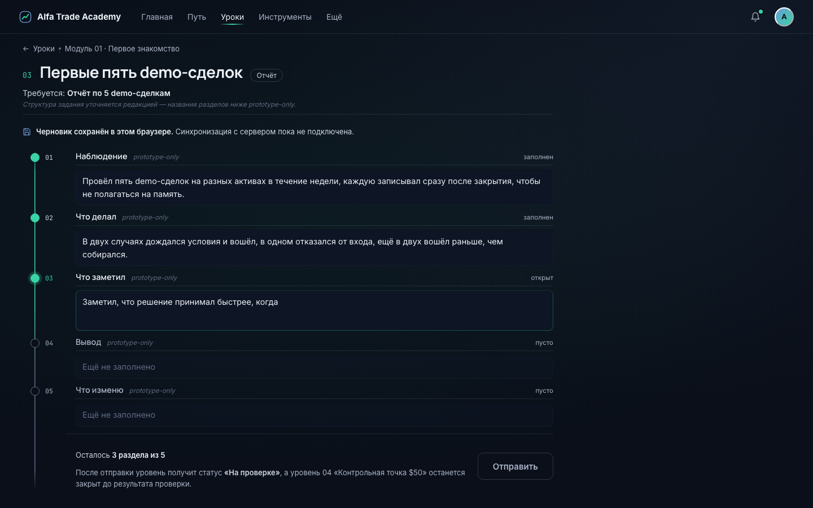
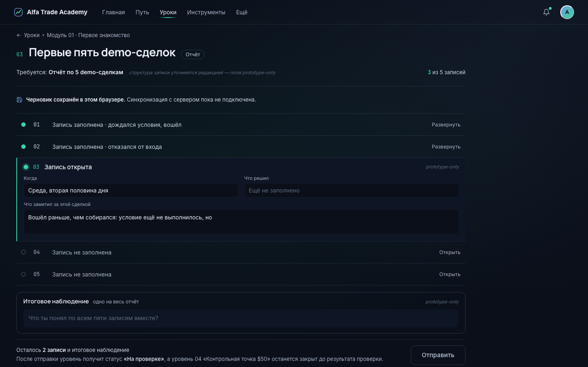
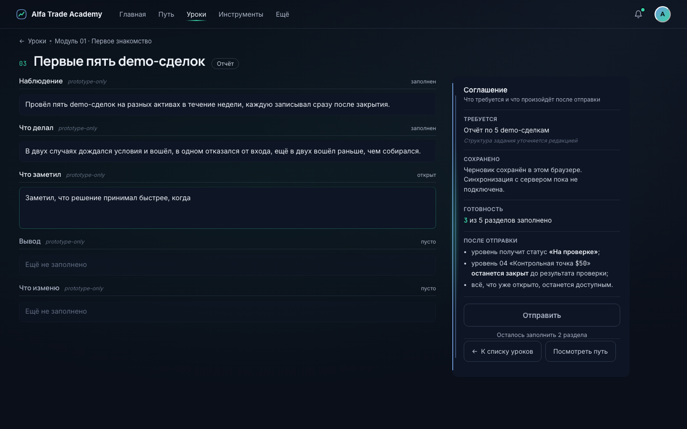

Уровень 3 «Первые пять demo-сделок» · артефакт «Отчёт по 5 demo-сделкам» · модуль 01 «Первое знакомство» · данные из curriculum fixture
Кадры: настоящий Chromium, 1440×900, точный клип
Shell, токены и шрифты — продуктовые
Состояние: draft (3 из 5) · lifecycle — на отдельной доске

A
Report Desk
КОМПОЗИЦИЯ
Один непрерывный учебный документ. Слева световая ось-спайн с узлами 01–05, справа доминирующая писчая поверхность. Разделы — правила внутри одного листа, не карточки. Submit в конце работы.
СИЛЬНАЯ СТОРОНА
Ощущается как работа, а не как форма. Спайн отвечает «что заполнено / что осталось» геометрией, без процентов и колец.
ГЛАВНЫЙ РИСК
Дрейф в Notion / document editor: чем свободнее писчая поверхность, тем меньше в ней курса.
ПРИГОДНОСТЬ L3
высокая Разделы работают, но артефакт «5 сделок» не выражен структурой.
БУДУЩИЕ REPORT-LEVEL
высшая Разделы есть у любого артефакта — от «Risk Plan» до «финального экзамена».

B
Evidence Ledger
КОМПОЗИЦИЯ
Артефакт раскрыт собственной структурой: пять записей-строк, одна развёрнута в рабочую плоскость. Итоговое наблюдение — отдельный материал. Ноль карточек, ноль колонок.
СИЛЬНАЯ СТОРОНА
Структура выведена из данных курса (артефакт требует ровно 5), а не из макета. Пять signal-точек — сами по себе шкала.
ГЛАВНЫЙ РИСК
Не масштабируется на неперечислимые артефакты; при добавлении котировок мгновенно станет trading terminal.
ПРИГОДНОСТЬ L3
высшая Единственное направление, где форма экрана = форма артефакта.
БУДУЩИЕ REPORT-LEVEL
низкая-средняя У «Risk Plan» и «плана вокруг новостей» нет кардинальности.

C
Submission Contract
КОМПОЗИЦИЯ
Две встречные плоскости: слева работа, справа устойчивая плита-соглашение с apertura-кромкой (геометрия CheckpointGate). Четыре утверждения, submit как следствие.
СИЛЬНАЯ СТОРОНА
Единственное направление, где lifecycle объяснён до отправки: пользователь заранее знает, что путь остановится.
ГЛАВНЫЙ РИСК
Статус доминирует над работой; плита может съехать в admin dashboard / колонку KPI-плиток.
ПРИГОДНОСТЬ L3
высокая Работает, но артефакт снова не выражен структурой.
БУДУЩИЕ REPORT-LEVEL
высокая Соглашение универсально — оно про lifecycle, а не про артефакт.
Ключевой компромисс: пригодность для L3 и для остальных 21 report/practical-уровней расходятся — B выигрывает первое, A второе, C относится к тому, что делает фазу трудной (pending-review).Победитель не выбран. Выбор — за пользователем. Допустимо объединение названных элементов.